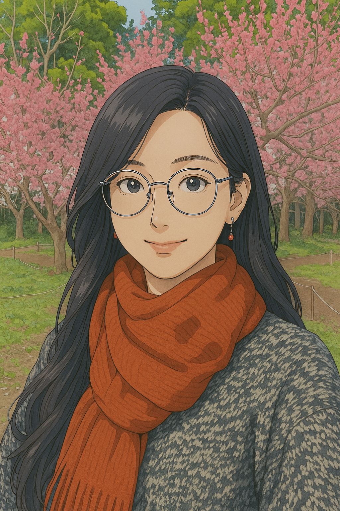

關於我
我是一名諮商心理師，
學習至今的體悟是，人不可能永遠快樂或優雅。
地球上，有各式各樣的靈魂：
有些高功能、可社交、做事效率好，
誰也看不出來殼子底下，藏著一個渴望擁抱的靈魂。
✨ 我靠近許多人與他們的故事
我觀察著地球：人們、城市、關係，那些令人擔憂或喜悅的瞬間。
✨ 我想對你說——
♥️ 渴望被愛沒有錯：只要你的選擇不蓄意傷人。
✨ 人際複雜沒有錯：一群人湊成的江湖怎會單純？
🌌 找尋自我沒有錯：不能只被「叛逆期」蓋過。
💔 社交痛苦沒有錯：你經歷的，絕不只是小題大作。
這些困擾、疑問與疲憊，在星際中也正在發生。
你可以把空間留給自己、
關注自己、
愛自己。
🎓 學歷
- 國立彰化師範大學 輔導與諮商學系 碩士
- 國立彰化師範大學 輔導與諮商學系 學士
💼 經歷
- 蛹之生心理諮商所 專任諮商心理師（現任）
- 社團法人中華民國諮商心理師公會全國聯合會 媒體公關委員會新聞媒體組組員、數位媒體推廣組組員（現任）
- 逢甲大學兼任心理師（現任）
- 台中市家庭暴力及性侵害防治中心特約心理師（現任）
- 台灣航空電子股份有限公司特約心理師（現任）
- 雲林縣高級中等學校學生再申訴評議委員會委員（現任）
- 建國科大、正修科大、彰師大專任心理師
- 台中家商代理專任輔導教師
📄 證書字號與專業進修
- 諮心字第004328號
- 校園性騷擾調查專業人才庫
- 工作場所性騷擾調查專業人才庫
- NAHA國際認證初階芳療師
🔍 專長議題
- 人際關係、職場關係、社交技巧訓練
- 情緒壓力調適
- 感情分手 / 失落議題
- 生涯 / 職涯規劃、自我探索
- 多元性別議題
- 親子關係、原生家庭議題
- CBT認知行為治療
🌿 特殊課程
- 多元性別教育訓練（企業單位）
- 園藝治療工作坊：個體化盆栽／循環苔球／生態瓶設計
- 芳療體驗課程：芳香皂、精油按摩油、自製複方精油、嗅香體驗